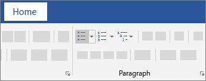
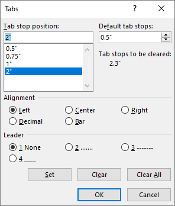

Create a list
To start a numbered list, type 1, a period (.), a space, and some text. Then press Enter. Word will automatically start a numbered list for you.
Type* and a space before your text, and Word will make a bulleted list.
To complete your list, press Enter until the bullets or numbering switch off.
Create a list from existing text
-
Select the text you want to change into a list.
-
Go to Home> Bullets or Home> Numbering.

Set Line Spacing
Select the paragraphs you want to change. Go to Home > Line and Paragraph Spacing. Choose the number of line spaces you want or select Line Spacing Options, and then select the options you want under Spacing.
Borders and shades
- Select a cell, multiple cells, or the whole table.
- Click the Design tab in the Table Tools ribbon group.
- Click the Border Styles list arrow.
- Select a border style.
- Click the Borders list arrow.
- Select the borders you want to add.
Set Tabs
To set a tab stop
-
Go to Home and select the Paragraph dialog launcher.
-
Select Tabs.
-
Type a measurement in the Tab stop position field.
-
Select an Alignment.
-
Select a Leader if you want one.
-
Select Set.
-
Select OK.
